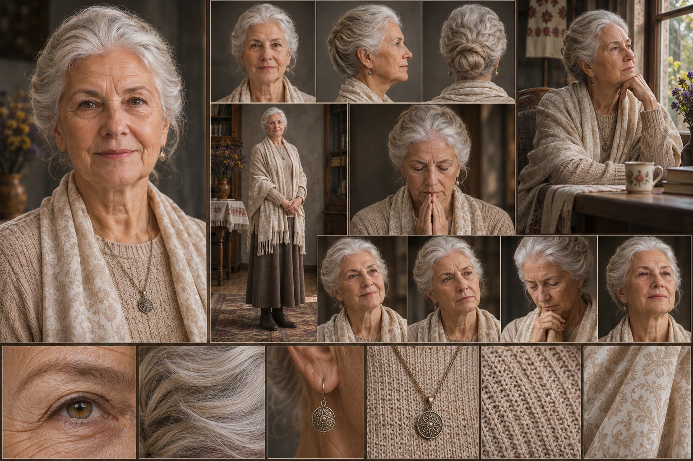

Пророчиця · Перший план
Та, що бачить мінливе майбутнє
Ганна — дружина діда Миколи. Вона має дар пророцтва й упродовж багатьох років бачить можливі варіанти майбутнього людства. Її передбачення не є незмінними: вони змінюються разом із подіями та рішеннями людей.
ІСТОРІЯ ПЕРСОНАЖА
Пророцтво, що змінюється
На зламі тисячоліть Микола зустрів у церкві жінку з даром пророцтва. Вона говорила про загибель планети, але її передбачення часто змінювалися. Микола повірив їй, зрозумівши, що пророцтва відображають зміни самого світу, а не фіксують єдиний наперед визначений сценарій.
Вони побралися, і Микола відкрив дружині свою таємницю. Відтоді вони жили разом, оберігаючи секрети одне одного. Коли Ганна попередила про близьку велику ядерну війну, її слова збіглися з початком нових подій і пробудженням характерників.
Згодом її бачення знову змінилося. Загроза ядерної війни залишалася, але майбутнє вже не зводилося до одного неминучого фіналу: з’явилися різні можливості — як добрі, так і катастрофічні. Пізніше Миколай і далі згадував її пророцтво, сподіваючись, що одного дня вона побачить для людства не загибель, а процвітання.
Характер і поведінка
У сцені вдома Ганна не виходить зустрічати велику компанію: Микола пояснює, що вона не любить великих товариств, хоча охоче подорожує з одним-двома гостями. Інші риси характеру текст поки що розкриває небагато, тому не приписуємо їй непідтверджених якостей.